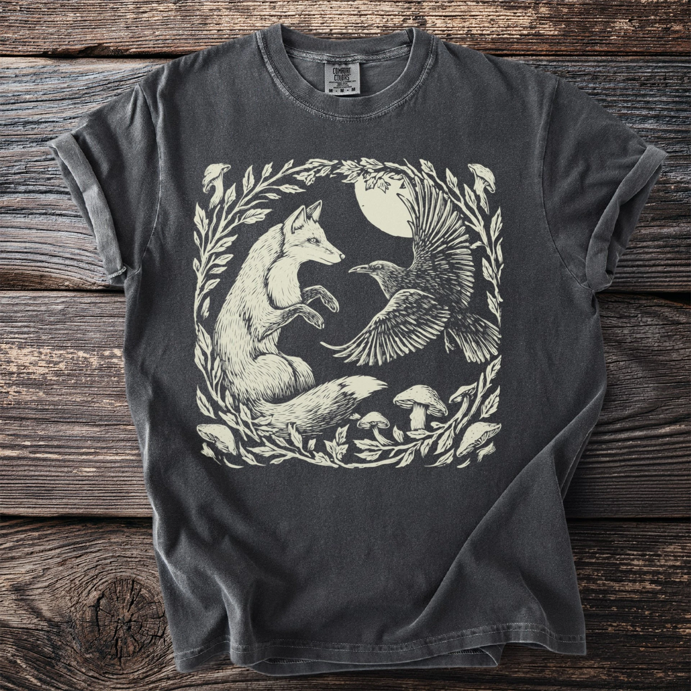
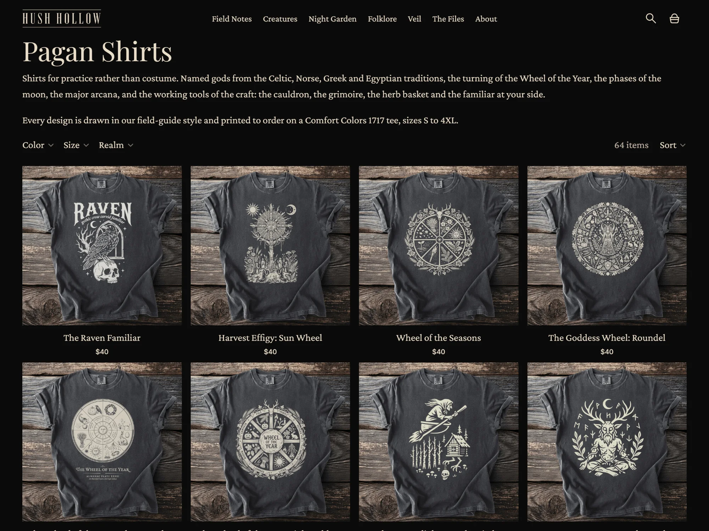
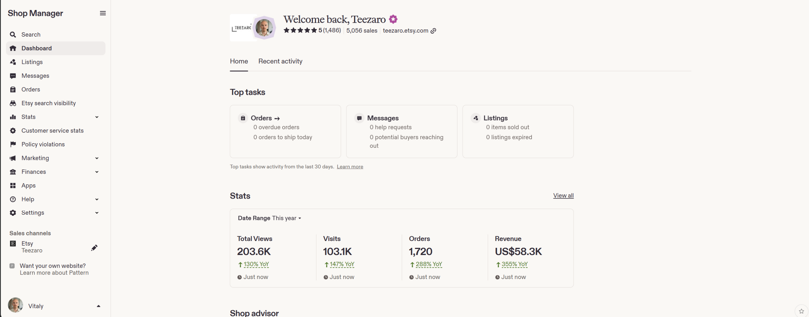

ניסיון
- Teezaro
מייסד ומפעיל איקומרס
- היוםHush Hollow
מייסד, מנהל קריאייטיב ומפעיל Shopify
ניהול קריאייטיב באיקומרס · תפעול
אני מחבר בין כיוון ויזואלי, הפקה מעשית, תפעול קטלוג ומשוב ביצועים. התוצאה היא קריאייטיב שיכול לשרת קטלוג של יותר מ-1,000 מוצרים ועדיין להרגיש מכוון ומדויק.
לצפייה בעבודות נבחרות
שנתיים וחצי של בנייה והפעלה של מותגי איקומרס באטסי ובשופיפיי.
מייסד ומפעיל איקומרס
מייסד, מנהל קריאייטיב ומפעיל Shopify
Shopify Admin, Etsy Shop Manager, Printify, Photoshop, Google Search Console, Excel ו-Google Sheets.
אוטומציית קטלוג, הפקת קריאייטיב בסיוע AI, שינויים בחנות, SEO טכני, פעולות בכמות גדולה, אבחון פידים ובקרת איכות לפני פרסום.
תיק עבודות קריאייטיב
מבחר מתוך Hush Hollow, מותג שופיפיי חי עם קטלוג של יותר מ-1,000 מוצרים. אני קובע את הכללים הוויזואליים, בונה את הנכסים ואת דפי המוצר, ובודק מה עולה לאוויר.




AI מגדיל את התפוקה. התפקיד שלי הוא להגדיר את הרמה, לזהות כשלים שקטים ולהחליט מה ראוי לעלות לאוויר.
הגדרת כללי המותג, תפקיד המוצר, הקומפוזיציה וההבטחה ללקוח.
שימוש בכלי תמונה מבוססי AI, פוטושופ, מוקאפים חוזרים ותהליכי אצווה כשהם משפרים את התוצאה.
בדיקת אנטומיה, טיפוגרפיה, היררכיה, צבע, מוכנות להדפסה ועקביות הקטלוג.
שימוש בהתנהגות חיפוש, הקלקות, המרות ומשוב לקוחות כדי לבנות את ההשערה הבאה.
מקרי תפעול
שני מקרי תפעול שמחברים בין קטלוג, חנות, שילוח וחוויית לקוח.
מייסד · מפעיל איקומרס · מנהל קריאייטיב · אחראי חוויית לקוח
האתגרלבנות ולהרחיב עסק הדפסה לפי דרישה, ובמקביל לשמור על איכות המוצר, על ביצוע ההזמנות ועל אמון הלקוחות כשכולם מחוברים יחד בכמה פלטפורמות.
הוכחהיותר מ-5,000 מכירות · דירוג 5.0 · כ-1,500 ביקורות · הכנסות 2026 גדלו פי 4 ויותר לעומת השנה שעברה.

מייסד · אסטרטג מותג · מפעיל איקומרס · מנהל קריאייטיב
האתגרלהפוך קטלוג רחב של ביגוד בהשראת היסטוריית הטבע למותג עצמאי עם נקודת מבט אחידה, ולחנות שמתפקדת כמערכת אחת.
הוכחהיישום שופיפיי חי שכולל את החנות, הקטלוג, מבנה ההצעה, המדיניות והמגזין The Hollow Journal.
לחנות החיהניהול קריאייטיב ותפעול איקומרס, מהקונספט ועד לחנות פעילה.
קונספטים, בריפים, סטנדרטים להפקה, בקרת נכסים ואישור לפרסום.
עדכוני חנות, מבצעים, אפליקציות, תהליך התשלום ובקרת איכות לפני העלאה לאוויר.
נתוני מוצר, קולקציות, תמחור, מרצ'נדייזינג ועדכונים בכמות גדולה.
AI מסייע בהפקה. אני אחראי על הסטנדרט ועל ההחלטה לפרסם.
אני מחבר החלטות קריאייטיב למה שמגיע בפועל ללקוח.
אני ויטלי מצביץ', מפעיל קריאייטיב באיקומרס שבנה והפעיל מותגי הדפסה לפי דרישה באטסי ובשופיפיי.
העסק צמח מעבר ל-5,000 מכירות תוך שמירה על דירוג 5.0 עם כ-1,500 ביקורות, וזה אילץ אותי להבין איך כל החלטה, מרעיון המוצר הראשון ועד משלוח שהתעכב, משפיעה על שאר התפעול.
היום אני מיישם את הניסיון הזה ב-Hush Hollow, שם אני מנהל את העולם הוויזואלי, מפיק נכסים מסחריים, בונה את הקטלוג והחנות, ומשתמש ב-AI כשהוא משפר את העבודה ולא רק מגדיל את הכמות.
אני פתוח לתפקידים ולשיתופי פעולה בניהול קריאייטיב באיקומרס, מערכות מותג, שופיפיי, תפעול קטלוג ותהליכי AI מעשיים.
לצפייה בהוכחות